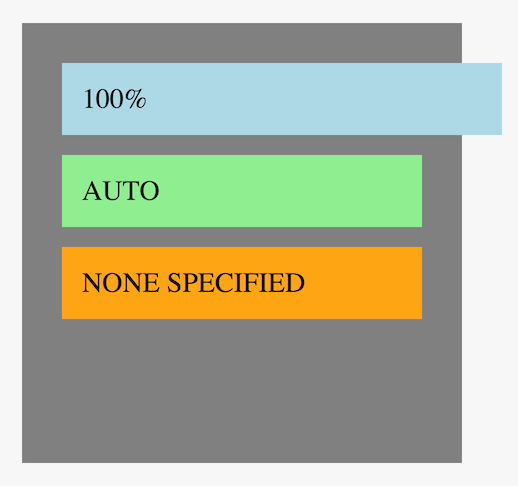

Responsive Gilt.com
What tools and processes did we use to make a legacy micro-services architected app responsive?
Overview
History of mobile web at Gilt
What does "Responsive" mean?
Adaptive and responsive tool sets
Development process
Quirks & hiccups & testing
Who are we?
Jose Sanchez
Software Engineer, 5 years
jsanchez@gilt.com
Kyle Dorman
Software Engineer, 1 year
kdorman@gilt.com
Greg Mazurek
Lead Software Engineer, 3 years
gmazurek@gilt.com
We are Gilt.com's Special Operations team
History of Mobile Web at Gilt
m.gilt.com
First: minimum viable product, Spring/JSP, no JS, little CSS
Second: BackboneJS

1 engineering resource on m.gilt.com...
couldn't keep up with 70 resources on gilt.com.
No feature parity across devices.
M Dot in 2014
Third: migrated legacy gilt.com app to a responsive gilt.com experience
Responsive led to "mobile-same-time" product development.


What does "Responsive" mean?
We're talking about both adaptive and responsive design.
When we think about responsive design, we think about the width of the viewport.
When we think about adaptive design, we think about device capabilities (power, features) and network conditions
Our adaptive tool set...
Not all devices are equal.
The server reads user agent
and then triages to one of three buckets we call "target experiences."
Three target experiences:
Minimal
Intermediate
Full
Minimal Target Experience
isIPod || isIPhone || isBlackberry || isIE6 || isIE7 || isAndroidShell || isAndroid
Intermediate Target Experience
isIPad
Full Target Experience
!isMinimalTargetExperience && !isIntermediateTargetExperience
Access to target experience logic:
Handlebars
JavaScript
Scala
Handlebars:
JavaScript:


Scala:

Other adaptive tools...
Modernizr: CSS touch/no-touch classes

Browser detect features:
Example!
Carousel vs. Scrolling


Responsive design tool set
Four Viewport Breakpoints
wide: > 1024px
medium: between 768px and 1023px
narrow: between 480px and 767px
tiny: < 479px
LESS Variables
Inline Selector Overrides
Native CSS features
% widths
box-sizing: border-box
width: calc(30% - 5px)
What does this look like?
Sales Listing Page - Wide

Sales Listing Page - Medium
Sales Listing Page - Narrow
Sales Listing Page - Tiny

Product Listing Page - Wide

Product Listing Page - Medium

Product Listing Page - Narrow
Product Listing Page - Tiny

Product Detail Page - Wide
Product Detail Page - Medium

Product Detail Page - Narrow
Product Detail Page - Tiny

Images
We have a lot of them.
Sale listing pages load around 50 high quality images per request.
Product listing pages have infinite scroll and load 15 high quality images up front.
This is expensive for slow network conditions.
This is inefficient if we use the same image aspect ratio for each breakpoint.
Akamai & Picturefill.js
Akamai lets us serve compressed images from the cdn.
image/path/dress.png?q=85
No discernible loss in quality.
Image size reduced by 40%.
Picturefill.js is a polyfill for the <picture> element.
The <picture> element lets us serve the appropriate image for each breakpoint.

Compress your images and use Picturefill.js!
Development Process
Develop in the dark...
Involve design team after the technical limitations have been sorted...
...but before users see it.
Do not build for a specific device
Make tasks as small as possible
Use the right tool for the right job
JSBin and co. is your friend
jsbin.com

Testing Caveats
Chrome Emulator is OK
iOS Emulator is better
Device is best and required before merging to master
QA & Automation
Regression
Overnight Testing
Android 2.3+ | iPhone4+
Most Browsers, iPads, Kindle Fire, and Nexus Tablet
Selenium
Testing tool for automating web applications
Runs tests before each production deploy
Selenium Testing Helper
Page Scroll Width <= Viewport Width
Quirks & Hiccups
Width Auto vs. 100%
Inline block adds a 4px margin.
vw and vh units
Device rotation event listeners
onrotation
orientationchange
matchmedia
Android 2.3
Evangelize
Creating tools and process is fun!
Telling people that they have to use them stinks.
We tried to explain why we thought our tools were best in class.
Internal learning workshops.
Internal presentations and conversations.
External blog posts and presentations.
As much as possible, involve the people who will use the tools in the process of making the tools as early as possible.
Thank you!
gmazurek@gilt.com
kdorman@gilt.com
jsanchez@gilt.com